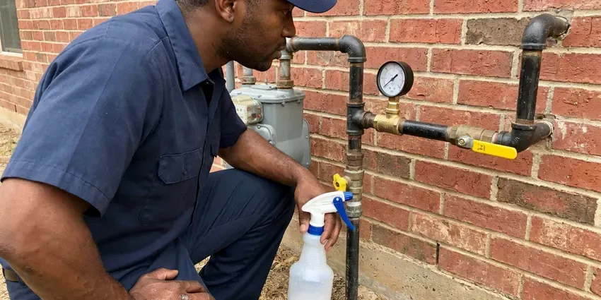

Hot Water Tank Maintenance in Southaven, MS
Rumbling tank in Southaven, MS? Our plumbers drain the sediment and replace a spent anode rod in the same visit.
- Relief Valve Test Every Visit
- Written Condition Report
- 30 to 80 Gallon Units
- Upfront Pricing Before Work

A Water Heater Flush With a Written Report in Southaven, MS.
One visit drains the sediment and tells you how much anode is left.
Keep Your Tank Quiet in Southaven, MS
A water heater in a garage or attic is equipment, and equipment needs a schedule. Iron can leave orange stains on fixtures and laundry, and sulfur odors often trace back to the water heater anode or the well itself. Sediment settles on the tank floor every month. Flushing once a year protects efficiency and keeps the warranty claim clean.
Some of what we do:
- Electric element and thermostat testing
- T&P relief valve test and discharge line check
- Static water pressure test at a hose bib

Additional Plumbing Maintenance Services in Southaven, MS
Our maintenance and specialty plumbing services in Southaven, MS catch small problems before they become emergencies.




Gas Line Repair in Southaven

Customers
Why Choose DFM Plumbing for Hot Water Tank Maintenance in Southaven, MS?
Pricing is flat and quoted up front. No hourly meter runs while we wait for a slow drain. Anode replacement is quoted separately, and you can decline it.
- Fewer Surprise Failures, We catch a failing element or a spent anode before it leaves you with a cold shower.
- Lower Energy Bills, Without a sediment blanket on the bottom, the burner or elements heat water faster.
- Warranty Records, You get dated service notes that manufacturers ask for on a claim.
Citywide Coverage
We cover every part of Southaven, from new subdivisions with attic tanks to older homes with heaters tucked under a basement stair. The price is the same across town. Our dispatcher groups appointments by area so the tech reaches you inside the window we gave you.
Experienced Team
Our plumbers have worked on Rheem, AO Smith, Bradford White and State tanks for years, and they know which models hide the anode under a plastic cap. It shortens the visit. They also know which drain valves tend to snap and which tanks need a flexible link anode under a low ceiling.
Safety-First Approach
Safety starts with shutting things off: gas valve off, breaker off for electric tanks, cold supply closed and a hot faucet opened. Nothing gets touched before that. On gas units we use a combustible gas detector around the valve and union before and after the work, since a fitting that moved can start to seep.
Trusted Certified Southaven Plumbing Services Professionals
At DFM Plumbing, we are proud to offer certified plumbing services throughout Southaven, MS. Those papers on the wall mean something. Every repair, install and maintenance visit follows strict safety and quality rules, and the plumbers doing the work carry recognized industry credentials.
Call Us Now PHCC Plumbing Contractor Recognition
PHCC Plumbing Contractor Recognition Better Business Bureau (BBB) Accreditation
Better Business Bureau (BBB) Accreditation Angi Certified Pro
Angi Certified Pro ISO 9001 Quality Management Certification
ISO 9001 Quality Management CertificationWhat a Tank Service Visit Covers in Southaven, MS
Commercial Tank Maintenance in Southaven, MS
Restaurants, salons, laundromats and small offices run tanks much harder than a household does, often 75 to 100 gallons cycling all day. Sediment builds up two or three times faster. Most commercial tanks go on a quarterly or twice-yearly schedule with a dated log on the jacket. Downtime gets scheduled outside business hours.

Standard Tank Tune-Up in Southaven
A standard tune-up starts with the fuel off and the cold supply closed, then a full drain through the bottom valve until the water runs clear. That alone takes 30 to 40 minutes. We check the heating elements or burner, read the thermostat setting and look at every fitting on top of the tank for green crust or drips. Any weeping at the dielectric nipples goes on the report.
Electric Element Check in Southaven
Electric tanks have two elements, usually 4,500 watts at 240 volts, and the lower one does most of the work and takes most of the scale. Each element gets an ohm reading. A failed lower element shows up as hot water that runs out halfway through a shower. We replace it with the matching wattage and voltage.
Gas and Electric Tank Checks in Southaven, MS
Gas and electric tanks share the same steel shell, but the parts that wear out are different. On gas units we inspect the burner, thermocouple and vent connector. On electric units we meter both elements and check each thermostat terminal for scorching. Both get a flush.
Electric Thermostat Service in Southaven
Each element on an electric tank has its own thermostat, and the upper one carries a reset button for the high-limit switch. A tripped reset is a symptom. We trace the cause, often a shorted element or a stuck thermostat, before resetting it. Power stays off at the breaker the whole time.
Gas Venting Tune-Up in Southaven, MS
Atmospheric gas tanks vent by draft alone, so the vent connector needs upward slope of at least a quarter inch per foot and tight joints with three screws each. We check draft at the hood. Lint on the flame arrestor of an FVIR tank can starve the burner and kill the pilot. We vacuum it clean.
Relief Valve and Expansion Tank Testing in Southaven
Street pressure over 80 psi is hard on every fixture in the house, and plumbing codes generally call for a pressure reducing valve above that number. We check static pressure at a hose bib. The relief valve lever gets lifted next. If the valve opens and reseats cleanly and the expansion tank holds its charge, the tank is safe from pressure spikes.

Sediment Flush and Descaling in Southaven
Calcium carbonate drops out of hard water every time the tank heats, and over a year it can harden into chunks the size of a thumbnail. That is what makes the popping noise. For stubborn scale we use a potable-rated descaler, then flush it clean. A clean bottom puts less heat stress on the seam.
Local Water Heater Flush Near Me in Southaven, MS
A plumber who works near Southaven every week knows which subdivisions put tanks in attics and which older streets still have them in a basement corner. That saves time on the first visit. We bring the ladder, the pan and the right hose length for your setup.
Same-day and next-day flush appointments are normal for us, with morning and afternoon arrival windows. We call when the tech is 30 minutes out. With hoses, anodes and valves on the truck, most tanks get done in one trip in Southaven.
DFM Plumbing at a Glance
- Licensed and insured plumbers serving Southaven, MS
- Same-day appointments and 24/7 emergency response
- Upfront, flat-rate pricing before work begins
- 4.8-star rated by 503+ Mississippi customers
Southaven Map
Southaven Information
- Population
- 56,851
- Area codes
- 662/731/901
- Service area
- Southaven and communities within 40 miles
- Nearby
- Horn Lake, Olive Branch, Oxford, Tupelo
A water heater tank in Southaven, MS lasts longer when someone drains the sediment and pulls the anode rod once a year.
Talk to a Plumber
Call DFM Plumbing for honest, reliable plumbing from people who know the trade in Southaven, MS.
Our Specialized Plumbing Services in Southaven, MS
At DFM Plumbing, we handle the full list of plumbing services across Southaven, MS. We go from leak detection all the way to full system installations, for homes and commercial buildings, and we do it quickly at a fair price. Take a look at our core services below:


Our Tank Maintenance Process in Southaven, MS
Three or four steps, no surprises on the bill.
Call or Book Online
Call (601) 265-9260 or use the online form, and tell us the size of the tank and whether it is gas or electric. You get a flat price before we schedule.
Arrival and Look-Over
Your DFM Plumbing plumber reads the data plate, checks for leaks and walks you through the plan.
Flush and Inspect
We drain and flush the tank, pull the anode and test the relief valve while it is empty.
Frequently Asked Questions About Hot Water Tank Maintenance in Southaven
Expect $75 to $200 on top of the flush for a new anode, parts and labor together. Powered anodes cost more. Seized rods and flexible link rods land near the high end.
Popping or rumbling, hot water that runs out sooner than it used to, rusty or cloudy water from the hot side, a sulfur smell, or moisture around the base. One of those is enough. A drip from the relief valve discharge pipe also counts, since it can mean high pressure or a failing valve.
Water chemistry decides how fast the anode gets eaten. Softeners speed up anode wear the most. Sodium from a softener makes the water more conductive, so a magnesium rod can be gone in two or three years instead of five, which is why we check it every visit.
Sediment hardens, the burner or elements work harder, and the bottom of the tank runs hotter than it should. Efficiency drops first. After that the anode runs out, corrosion starts on the liner, and the usual ending is a leak from the bottom seam on a tank that might have lasted another five years.
Usually not for an anode. Valve swaps depend on the local code office. We check the local rule and pull a permit if one is needed.
Yes, a basic drain with a garden hose is something most homeowners can do. The drain valve is the weak spot. Plastic valves on older tanks often break or refuse to reseal after being opened for the first time in years, and a DIY flush does not include an anode check or relief valve test.
Iron can leave rusty stains on fixtures and laundry, and sulfur odors often trace back to the water heater anode or the well itself. Dissolved calcium and magnesium drop out as scale every time the water heats, and that scale settles on the tank floor or crusts onto electric elements. Every layer costs you energy. Homes on harder water do better with a flush every six months.
Slower recovery after a shower is the most common early sign. Rust-tinted water from the hot tap is another. Moisture on the floor around the base, a relief valve pipe that drips, or water pooling in the drain pan all mean the visit should happen this week rather than next season.
Hear From Customers Who Hired Our Plumbing Experts

Patricia H.
We had a slab leak that two other companies could not find. DFM Plumbing located it in under an hour with a listening device. They rerouted the line through the attic instead of breaking up the floor, so we kept our kitchen tile.
Slab Leak Repair · Oxford, MS
Robert G.
The camera showed a full break in our clay sewer line near the street. DFM Plumbing replaced it with a trenchless pipe burst, so the only digging was two small pits in the yard. They let us watch the footage before and after.
Sewer Line Replacement · Oxford, MS
Monica A.
Our water bill nearly doubled in one month with no change in how we used water. The tech checked the meter, heard the leak under the hallway with his equipment, and opened a hole about a foot square. Fixed the same day.
Slab Leak Repair · Horn Lake, MS
Carlos V.
Our house still had galvanized pipe, and upstairs the shower was a trickle. The crew repiped everything in PEX over three days and patched every drywall hole before they left. The pressure difference is night and day.
Repiping · Oxford, MS
Megan L.
Our upstairs tub drained so slowly that every shower turned into a bath. DFM Plumbing pulled a wad of hair out of the stopper and then snaked the line past the trap. Three months later it still drains fast.
Drain Cleaning · Horn Lake, MSJessica T.
We were adding a gas range in a kitchen remodel and needed a new line run from the meter. The plumber pulled the permit, ran the pipe through the crawl space, and had it inspected and approved within the week.
Gas Line Repair · Oxford, MS